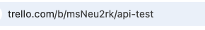

Usage Guide¶
Learn how to run the script and create Trello cards from your Word document.
Step 1: Run the Script¶
In your terminal (or command prompt), navigate to the folder where the script is located, and run:
python trello_card_creator.py
Step 2: Follow On-Screen Prompts¶
-
Enter API Credentials:
-
API Key: Paste when prompted.
-
API Token: Paste when prompted.
-
Provide Trello Board URL:
-
Copy the URL from your Trello board and paste it when prompted.

-
Select or Create a Word Document:
-
Option A: If you have a Word document ready, type
ywhen asked.- A file dialog will open. Navigate to and select your
.docxfile.
- A file dialog will open. Navigate to and select your
- Option B: Type
nto generate a sample template.- The script will create a
sample_template.docxfile in the script directory. - Open this file, fill in your card details, and save it.
- The script will create a
Step 3: Format Your Word Document¶
- Refer to the Word Document Format guide to properly format your
.docxfile.
Step 4: Run the Script Again (if needed)¶
- If you updated your Word document, rerun the script:
python trello_card_creator.py